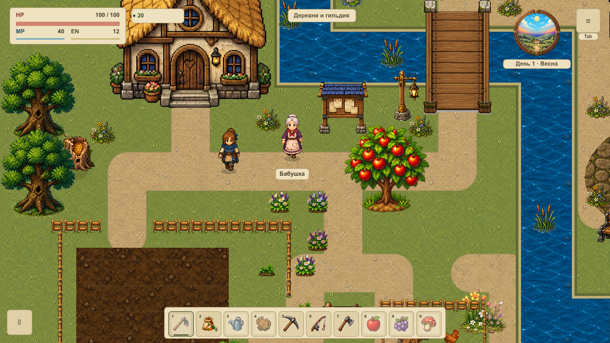
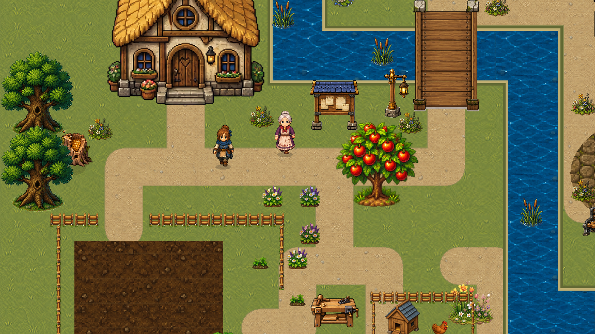

Два независимых запуска. 1152×648 · день 1 · полдень · seed 20261015. Эффекты выключены, кадры совпали пиксель в пиксель. Симуляция остановлена — это не FPS и не новый дизайн.
Условия и ограничения · Исходники и хеши

effects-0 · effects-1 · hud-1 · clean-1 · hud-restored · restored-0 · restored-1 · Паспорт
